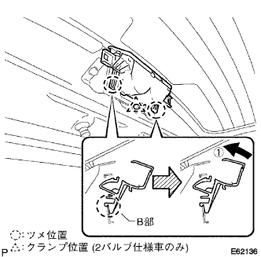

Back door glass installation |
| 1. Backdoor glass cleaning |
Remove the clip and spacer.(When the glass is reused)
Use a scraper to cut off the remaining adhesive and onside molding.(When the glass is reused)
Clean the glass outer periphery with white gasoline.
| 2. |
Apply a dedicated primer to the outside molding mounting part.
Attach a cross -side molding to the position in the figure.

| 3. Back door glass spacer installation |
Apply a dedicated primer to the spacer mounting part.
 |
Attach a backdoor glass spacer to the position of the figure.
| 4. Back door glass installation |
Body mounting face cleaning
 |
If the adhesive on the vehicle side is remarkably uneven, smooth with a knife.
Work before glass installation
Put the suction rubber on the glass.
The glass is placed on the body, and the width of the glass is uniform (the gap between the body and the glass end surface is uniform).
Paste the gum tape on the glass and the body panel, and mark with a pen.(New article)
Take off the glass.
Apply a dedicated primer to the part where the body surface on the vehicle is exposed (no adhesive remains).
Paste the butyl tape to the damaged clip position.(In case of clip damage due to glass reusing)
Set the adhesive on the sealant gun.
Apply the adhesive into a bead as shown in the figure.

Glass installation
Use suction rubber to match the matching mark and attach the glass.
Press the front of the glass lightly to completely adhere.
Fix the adhesive protruding and deficiency with a spatula.
Hold the glass with a protective tape until the adhesive is cured.
Extra adhesive is removed before hardening.
| 5. Back window glass channel RH installation |
Apply the primer to the body mounting surface.
Combine the two clips and attach the back window glass channel RH.
| 6. Back window glass channel LH installation |
The RH side is performed in the same procedure as LH.
| 7. Water leak inspection and repair |
After adhesion, apply water from the outside of the vehicle to confirm that there is no leak in the room.
In the event of a leak, the three cement black is applied after drying.
| 8. Rearaway pipear arm Assisted |
 |
Clean the Rear Wipibot Serr Me with a wire brush.
Clean the rear wiper arm cells with a circle or crossing.(When re -assembling)
 |
Rearaway Pamota Assessy is stopped at a automatic stop position, and the rear wiperem ASSY is attached with the nut as shown in the figure.
The rear waipa is activated while applying water or washer solution on the glass to confirm that the blade is wavy and does not interfere with the body.
| 9. Rearaway piper arm head cap installation |
| 10. Center Top Lamp ASSY installation |
Connect the connector to the center top lamp ASSY.
Centaster top lamps are inserted into the center top lamp bracket of two places of claws of ASSY B.
|  |
Rotate the center top lamp ASSY in the direction of ① and attach the center top lamp ASSY to the center top lamp bracket.
In the clamp, attach the harness of the center top lamp ASSY to the center top lamp bracket.
| 11. Attachment top lamp cover installation |
 |
Press the center top lamp cover in the direction of ① and attach two clips on the clip.
Press the center top lamp cover in the direction of ②, and attach the center top lamp cover in two places in parts A.
| 12. Attach the backdoor trim board |
 |
Found nine clips and attach the Batsukudo Atlim board.